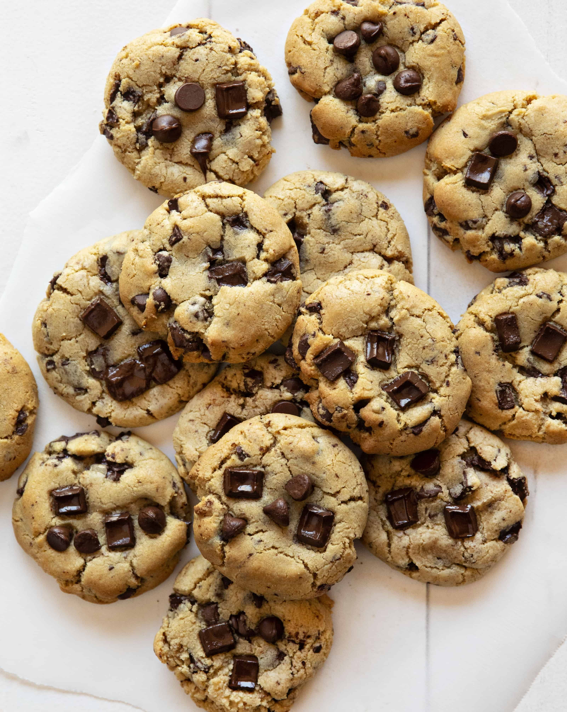

Recipes
Double Chocolate Cookies
Origin: Michigan
Source: Family Recipe
Category: Dessert
My daughter learned to make these cookies at a baking camp at Zingermanns and has tweaked the recipe to fit the taste buds of her siblings. They are extremely sugary so the salt helps to balance it. Note, these cookies are best eaten very quickly.
Recipe Ingredients
- Unsalted butter
- Granulated Sugar
- Packed light or dark brown sugar
- Large egg
- Pure vanilla extract
- Semi-sweet chocolate chunks (melted)
- All-purpose flour
- Natural unsweetened cocoa powder
- Baking soda
- Salt
- Semi-sweet chocolate chunks
Steps
- In a mixing bowl cream together the butter, granulated sugar, and brown sugar
- Add the egg and vanilla extract and beat well
- Add the melted chocolate
- In a separate bowl combine the flour, baking soda, cocoa powder and salt
- Combine the wet and dry ingredients
- Add the unmelted chocolate chunks.
- Form 15 cookies and place on a baking sheet.
- Cooke for 12 to 13 minutes at 350 degrees.
Chinese Hot and Sour Soup

Origin: China
Source: Family Recipe
Category: Soup
Chinese Hot and Sour Soup is a popular and flavorful soup known for its spicy and tangy taste. It's made with a variety of ingredients including tofu, mushrooms, and bamboo shoots.
Recipe Ingredients
- Tofu
- Mushroom
- Pork
- Bamboo shoots
- Soy sauce
- Water
Steps
- Boil water
- Simmer
- Cook ingredients
- Dip sauce
Swedish Pancakes

Origin: Sweden
Source: Kristi, true-north-kitchen.com
Category: Breakfast
Recipe Ingredients
- Butter
- Sugar
- Eggs
- Vanilla
- Milk
- Water
- Salt
- Flour
Steps
- Combine all ingredients in a blender and blend until completely smooth.Transfer to the refrigerator to rest for at least 2 hours or up to 2 days.
- Preheat the oven to 200 degrees if you plan to eat the pannkakor right away. Heat a 10 inch nonstick skillet over medium heat. Stir the batter briefly to recombine. Brush skillet with melted butter. Pick the skillet up off of the burner and quickly add ¼ cup of batter. Immediately begin swirling the batter around the skillet so that it coats the bottom of the pan. Continue swirling until the batter is just set. Return skillet to the burner. Cook until the pancake is golden brown in spots on the bottom, about 30 seconds. Use a thin spatula to loosen the pancake, flip it over continue to cook on the other side for about 30 seconds. Transfer to a plate. Cover with foil and transfer to oven to keep warm and repeat with remaining batter, wiping out skillet in between pancakes with paper towel as needed.
- Serve with lingonberry jam and butter or other desired toppings and/or fillings. See notes below for more information about making ahead of time and storing in the refrigerator or freezer.